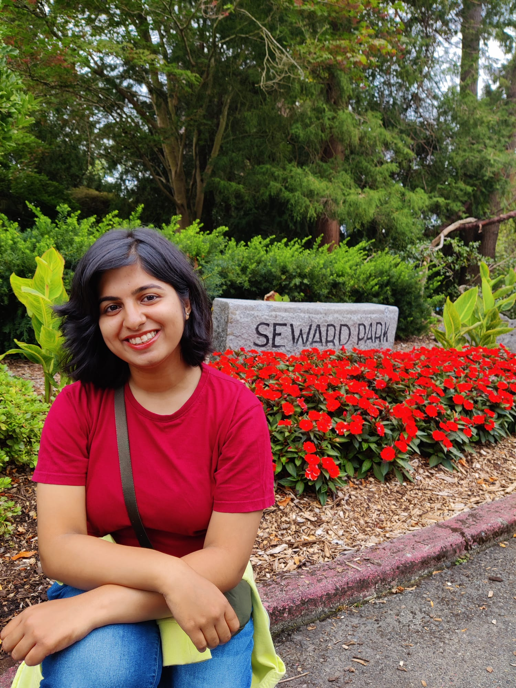

Designing control systems that hold up on real hardware.
PhD researcher in Electrical & Computer Engineering at the University of Washington, building ROS 2 simulation pipelines and compliant control algorithms — then validating them on real robotic manipulators.

About
I'm a graduate researcher in robotics and controls, focused on the gap between a controller that works in simulation and one that works on a physical robot. My current work centers on ROS 2–based simulation pipelines, controller design, and validating control algorithms on real systems.
At UW's Mechatronics, Automation & Controls Lab, I develop admittance and compliant control for precision manufacturing tasks, integrating real-time perception so a manipulator can adapt its trajectory online. I also earned my MS in Electrical & Computer Engineering from the University of Washington along the way. Before UW, I completed an Integrated Dual Degree at IIT (BHU) Varanasi, graduating first in my department.
Technical skills
Robotics & Control
Simulation & Frameworks
Programming
Hardware & Systems
Research experience
Present
Graduate Researcher
- Designed and implemented ROS 2–based simulation and control pipelines for controller design and validation on a UR5e industrial manipulator.
- Built physics-consistent robot models capturing kinematics, dynamics, and end-effector behavior.
- Developed admittance and compliant control algorithms for surface inspection in precision manufacturing.
- Integrated real-time perception-control loops using Intel RealSense depth sensing to adapt trajectories online.
- Supported controller testing on real hardware; findings are being prepared for publication.
May 2024
Undergraduate Researcher
- Developed finite-time nonlinear control algorithms for robotic systems using MATLAB/Simulink and hardware experiments.
- Built simulations to analyze stability, transient response, and robustness.
- Designed control architectures for dynamically unstable systems, including mobile robots and inverted pendulum setups.
- Established evaluation metrics to assess controller effectiveness; published at IEEE IECON 2024.
Jan 2024
Research Intern
- Enhanced and fine-tuned computational locomotor-learning models in MATLAB.
- Compared model outputs against experimental data to assess how healthy individuals learn under novel walking conditions.
Jul 2022
Research Intern
- Tested group machine-learning algorithms for Brain-Computer Interfaces (BCI) under Dr. Marco Congedo, Team ViBS.
- Coded and validated new group-learning approaches on lab and public BCI datasets.
Publications
Finite-Time Trajectory Tracking for Wheeled Mobile Robot
Transfer Learning for P300 Brain-Computer Interfaces by Joint Alignment of Feature Vectors
Rapid Control of Quantum Systems: A Continuous Nonsmooth Function Based Approach
Awards & scholarships
Khorana Program Scholar, 2023
One of 75 selected across India for a research internship at MIT, USA.
Charpak Lab Scholar, 2022
One of 30 selected across India for a research internship at Université Grenoble Alpes, France.
UW ECE WE25 Awardee
Selected by UW ECE for support to attend the Society of Women Engineers WE25 Conference.
Department Rank 1 / 120+
Graduated first in the department at IIT (BHU) Varanasi with a 9.8 / 10.0 GPA.
Let's talk robotics.
Open to research collaborations, conversations about controls and sim-to-real, and connecting with others in the field.
antara10@uw.edu